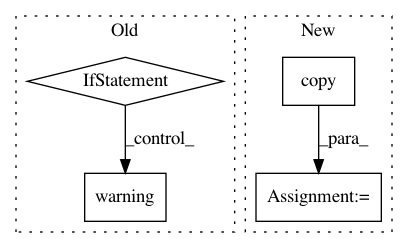

52c94b7ee970da69721ca64f291e38556310482e,rllib/agents/sac/sac_tf_policy.py,,build_sac_model,#Any#Any#Any#Any#,41
Before Change
else:
num_outputs = 0
// No state preprocessor: fcnet_hiddens should be empty.
if config["model"]["fcnet_hiddens"]:
logger.warning(
"When not using a state-preprocessor with SAC, `fcnet_hiddens`"
" will be set to an empty list! Any hidden layer sizes are "
"defined via `policy_model.fcnet_hiddens` and "
"`Q_model.fcnet_hiddens`.")
config["model"]["fcnet_hiddens"] = []
// Force-ignore any additionally provided hidden layer sizes.
// Everything should be configured using SAC"s "Q_model" and "policy_model"
// settings.
model = ModelCatalog.get_model_v2(
obs_space=obs_space,
action_space=action_space,
num_outputs=num_outputs,
After Change
// Force-ignore any additionally provided hidden layer sizes.
// Everything should be configured using SAC"s "Q_model" and "policy_model"
// settings.
policy_model_config = MODEL_DEFAULTS.copy()
policy_model_config.update(config["policy_model"])
q_model_config = MODEL_DEFAULTS.copy()
q_model_config.update(config["Q_model"])
In pattern: SUPERPATTERN
Frequency: 3
Non-data size: 4
Instances
Project Name: ray-project/ray
Commit Name: 52c94b7ee970da69721ca64f291e38556310482e
Time: 2021-02-02
Author: sven@anyscale.io
File Name: rllib/agents/sac/sac_tf_policy.py
Class Name:
Method Name: build_sac_model
Project Name: ray-project/ray
Commit Name: d192ef06119f3eccf569a844b30976db99cfa0f6
Time: 2020-03-10
Author: rliaw@berkeley.edu
File Name: python/ray/util/sgd/torch/torch_trainer.py
Class Name: TorchTrainer
Method Name: _start_workers
Project Name: hyperspy/hyperspy
Commit Name: afcab1f41ad35cc02b3b5be376887868e00118a7
Time: 2018-08-28
Author: eric.prestat@gmail.com
File Name: hyperspy/drawing/image.py
Class Name: ImagePlot
Method Name: update